|
|
Keywords: Land-use change, Emission, Air quality, Urban Environment, Socio-economic development, Remote Sensing
I am a satellite remote sensing expert with a focus on geospatial applications concerning land-use change and environmental impacts. Currently I am working as SAR Application Engineer at Synspective , a SAR-satellite space startup that provides cool and practical earth observation solutions.
My principal area of research interest has been urban environmental (mostly atmospheric air quality) issues emanating from socio-economic growth in developing countries by using satellite retrieved air pollution and land-use datasets. I am building an end-to-end remote sensing dataset based framework to study policy scenario-based for eco-health impact. This unique perspective stems from my experience as an academic researcher as well as a business consultant. I have been a Researcher at Research Institute of Humanity and Nature, Kyoto and a Project Assistant Professor at Institute of Industrial Science, The University of Tokyo, working with Prof Wataru Takeuchi's Remote Sensing of Environment and Disaster lab , since October 2019. I completed my PhD in Remote Sensing from The University of Tokyo (2018) with Prof. Wataru Takeuchi where I investigated Socio-economic growth Impacts on Urban Air Quality in India. I also previously worked on developing Multi-resolution Segmentation algorithm for Polarimetric SAR classification under Dr. Onkar Dikshit for B.Tech.-M.Tech. at Indian Institute of Technology Kanpur. As a data scientist at EXL Analytics (2013-2015), I built risk forecasting models for bank credit cards. These experiences were crucial in my learnings towards remote sensing data processing and time-series modeling.
Recent News
-
2021
- (06/21) Upcoming talk at Hokkiado University regarding Land-cover and Land-use classification using GEE
- (06/15) Joined . [Synspective] as SAR Application Engineer
- (05/01) Paper published in Nature Scientific Reports! "Nitrogen oxides concentration and emission change detection during COVID-19 restrictions in North India". [Paper]
- (03/31) Last day at RIHN, Kyoto. Will miss the natural scenery of Kyoto and the peaceful atmosphere of RIHN.
Projects: Air Quality
| 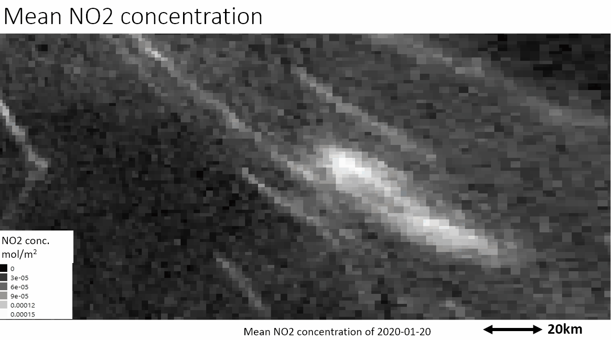 |
Top-down NOx Emission estimation with special focus on COVID-locakdown |
||
 |
Urban Air Quality (PM2.5) Indicator using Aerosol Optical Depth |
||
| 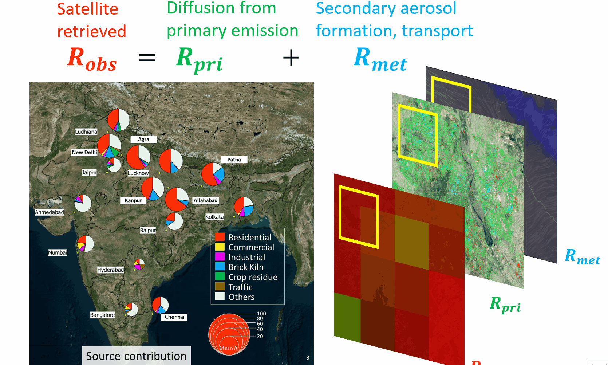 |
Contribution by Land-use types to Urban Air Pollution |
||
| 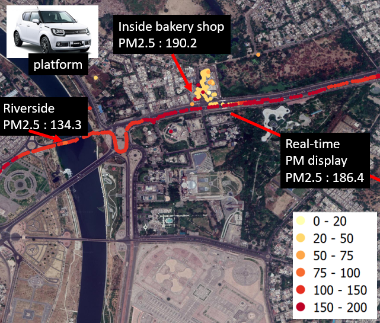 |
PM2.5 personal exposure mapping using portable low-cost sensors |
||
| 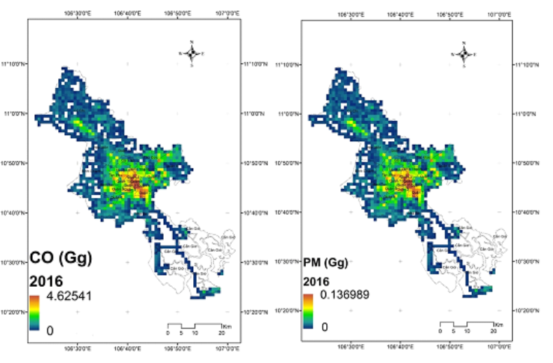 |
Emission Inventory of Ho Chi Minh City |
Projects: Urban land-use
| 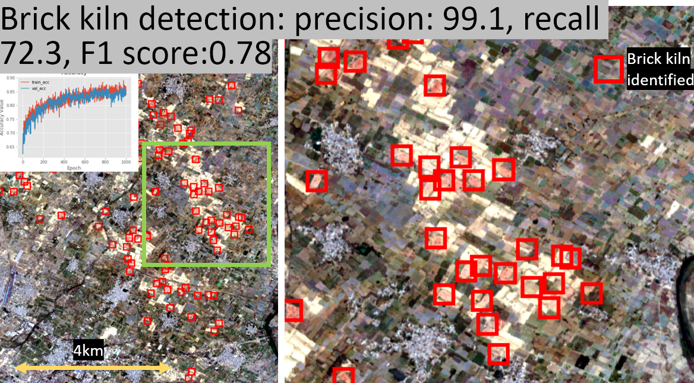 |
Identification of Brick Kilns using Sentinel-2 Imagery |
||
| 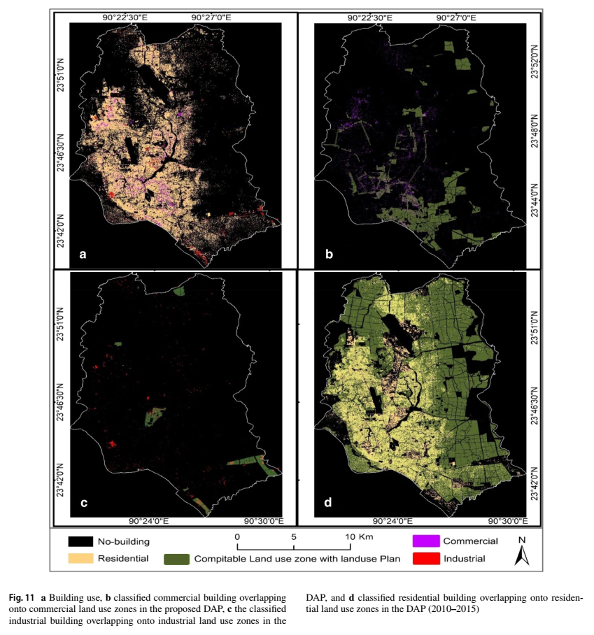 |
Identification of Conformity of Urban Land-use to Zoning Regulations |
||
| 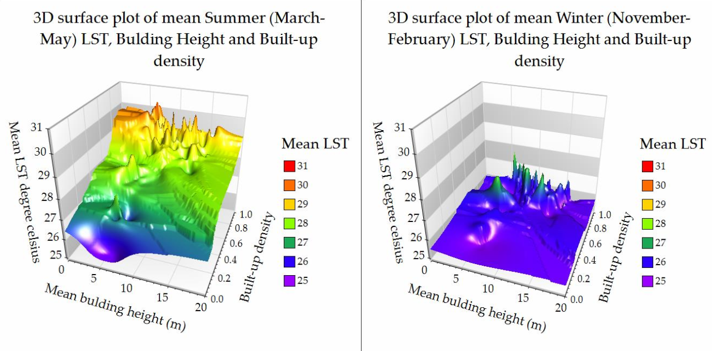 |
Mapping Impact of Building-density and Building height on Urban Heat Island |
||
| 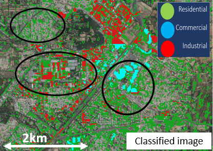 |
Mapping Urban Land-use using Building Height and Nighttime Light |
||
 |
Digital Building Height extraction from open Digital Surface Models |
||
| 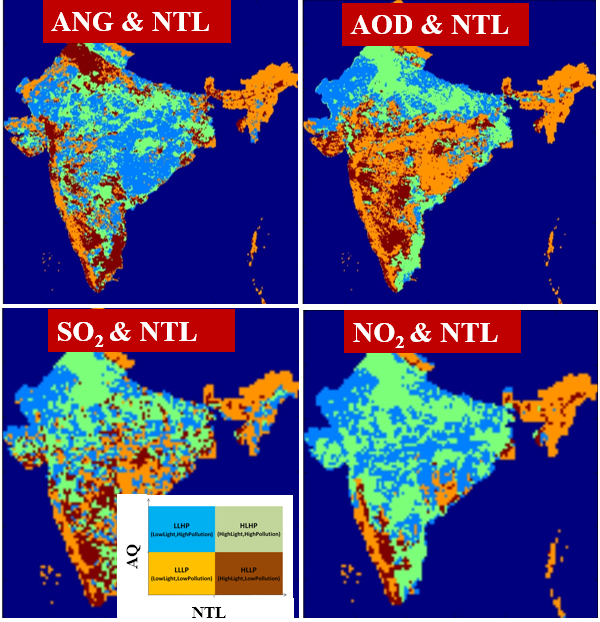 |
Clustering by Nighttime light and Air Pollution |
Projects: Agriculture
| 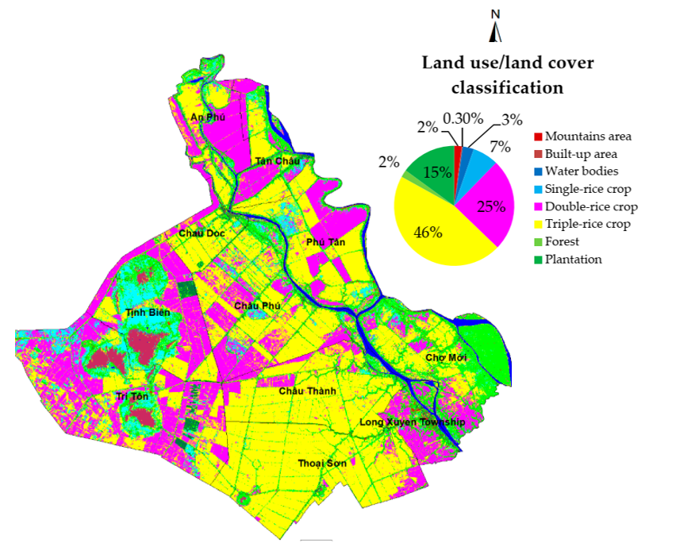 |
Identification of Rice-crop Calendar |
||
 |
Remote sensing agromet cal/val of KBDI Drought Index |
||
| 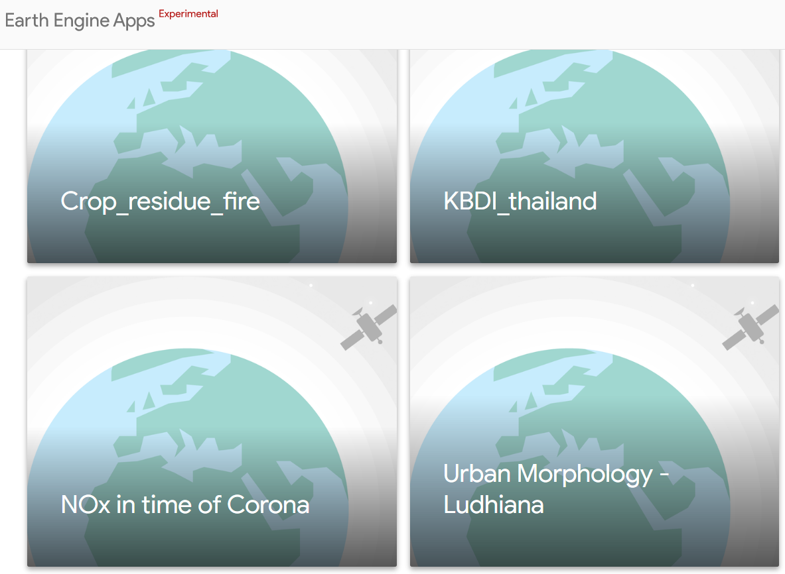 |
Link to my Google Earth Engine based apps |
HONORS AND AWARDS
- RIHN 2020 First Prize for Photography in General Category
- ACRS 2018 Best Paper Award Finalist
- IIS Forum 2018 Best Poster Award
Grants
- Tateishi Science and Technology Foundation International Travel Grant, 2019
- IIS Travel Grant for International Conference Research, 2019
Services
- Reviewer of Remote Sensing, Sustainability, Science of Total Environment, IEEE JSTARS, ISPRS IJGI
Older News
-
2020
- (11/25) Awarded First Prize for Photography in General Category at RIHN. The photo is now set as cover picture on my Twitter
- (04/02) Joined Research Insti. of Humanity and Nature, Kyoto as a Researcher. Will work on a project related with biomass burning, emissions, land-use Project Aakash, RIHN.
- (02/20) Talk at 22nd Ceres Symposium, Chiba University, "Public interest in air quality and its impact varies with baseline exposure:Google Trends and Remote Sensing based analysis". [About conference]
- (02/14) Paper published in Intenrational Archives of Photogrammetry and Remote sensing. "ASSESSING POPULATION SENSITIVITY TO URBAN AIR POLLUTION USING GOOGLE TRENDS AND REMOTE SENSING DATASETS". [Paper]
- (02/04) Invited talk at Young Sustainability Symposium, Hokkaido University titled "Remote Sensing for Urban Studies: Mapping Land-use for Emission Inventories in Developing Countries". [About event] 2019
- (12/17) Invited talk at NASA Regional Science Training at Prince of Songkla University, Thailand titled "Cloud based remote sensing data processing for Blue Carbon". [About workshop]
- (11/20) Poster presentation at IGI GHG Sub City Monitoring Symposium, The University of Tokyo titled "Estimating Impact of Urban Growth on Air Quality in Indian Cities". [Event report]
- (11/18) Invited talk at Sakura Science Exchane Program, Shibaura Institute of Technology titled "Mapping Drivers of Urban Air-pollution in Indian Cities using Remote Sensing" .
- (10/15) Oral talk at 40th Asian Conference of Remote Sensing, JAXA Special Session, at Daejeon, South Korea titled "Brick Kiln Detection In North India With PALSAR and Sentinel Imagery Using Deep Learning Of Small Datasets" . [About conference]
- (10/07) Oral talk at Pecora21/ISRSE38 Conference in Baltimore, US, titled "Assessing population sensitivity to urban air pollution using Google Trends and remote sensing datasets" . [About conference]
- (10/01) Promoted as Project Assistant professor at The University of Toyko. Thanks to everyone.
- (09/27) Received Tateishi International Travel Grant to present at Pecora21/ISRSE38 Conference at Baltimore, Maryland, US. [Grant]
- (09/19) Introduced air quality issues and brick kiln detection around New Delhi using Deep Learning at Institut Teknologi Bandung (ITB), Indonesia
- (09/17) Workshop on "Cloud based satellite image processing: Introduction to GEE" at ICOIRS, Bandung, Indonesia
- (08/28) Poster presented at "Symposium on Data Driven Future Society"
- (08/28) Paper accepted in Atmosphere. "Impact of Urban Growth on Air Quality in Indian Cities Using Hierarchical Bayesian Approach". [Paper]
- (07/16) Oral talk at NASA LCLUC for "Detecting Brick Kilns Around New Delhi Using PALSAR-2 Imagery With Deep Learning". [Slides] 2018
- (2018/12/20) Released open source building height extraction Python code based on earlier publication DSM2DTM. [Github]